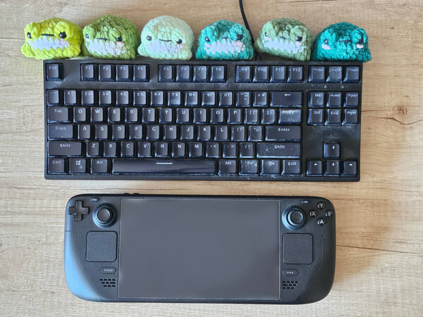
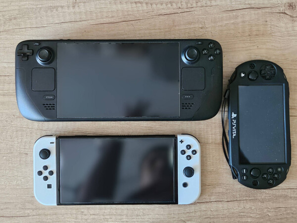
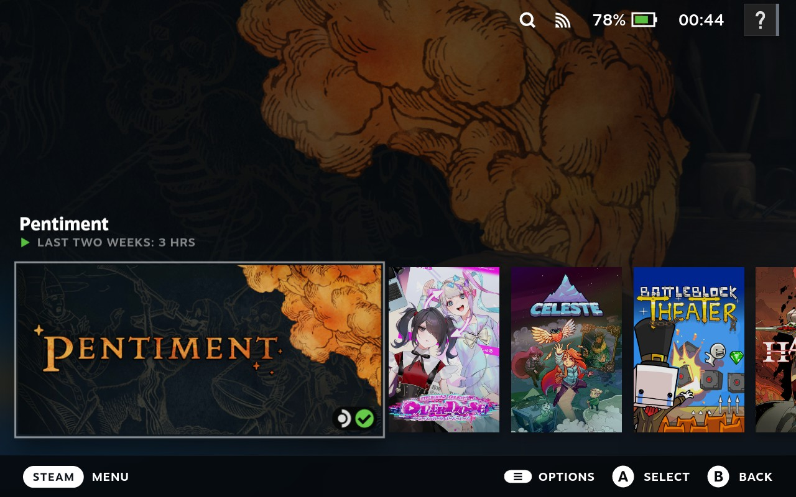
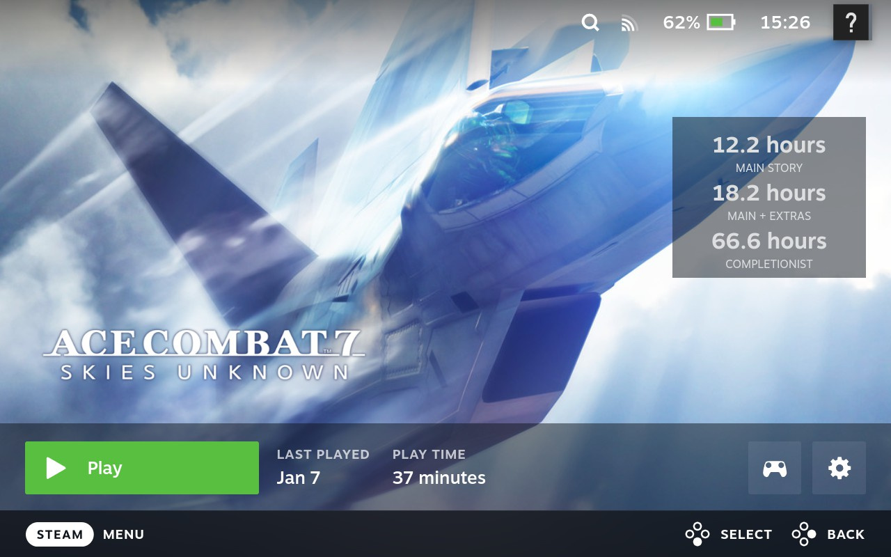
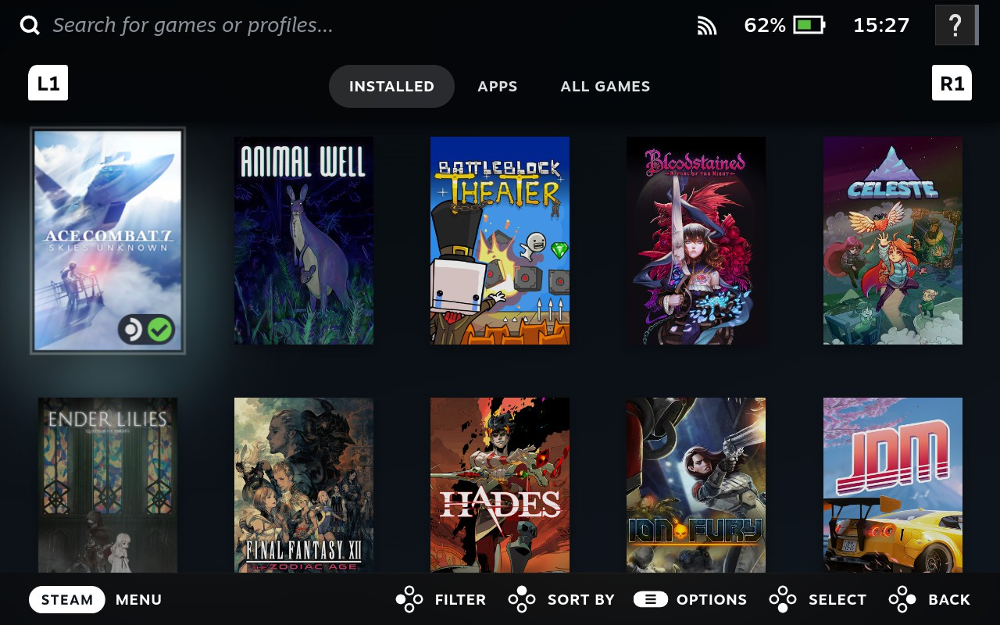
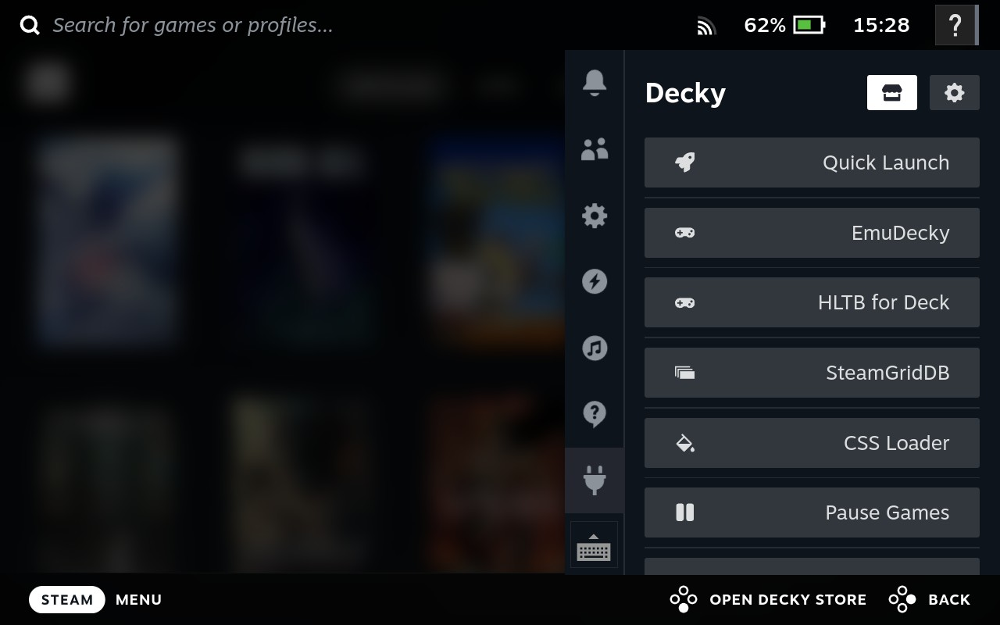
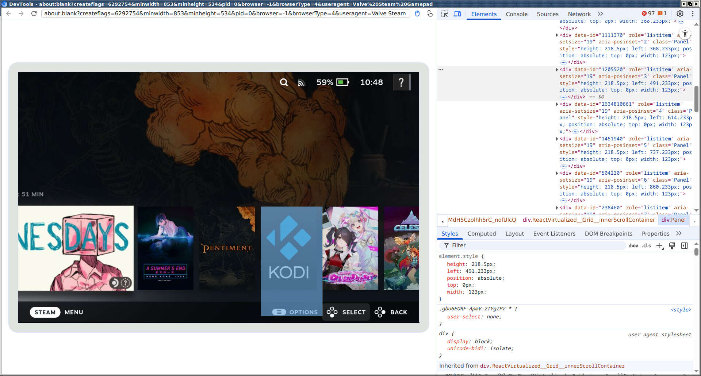
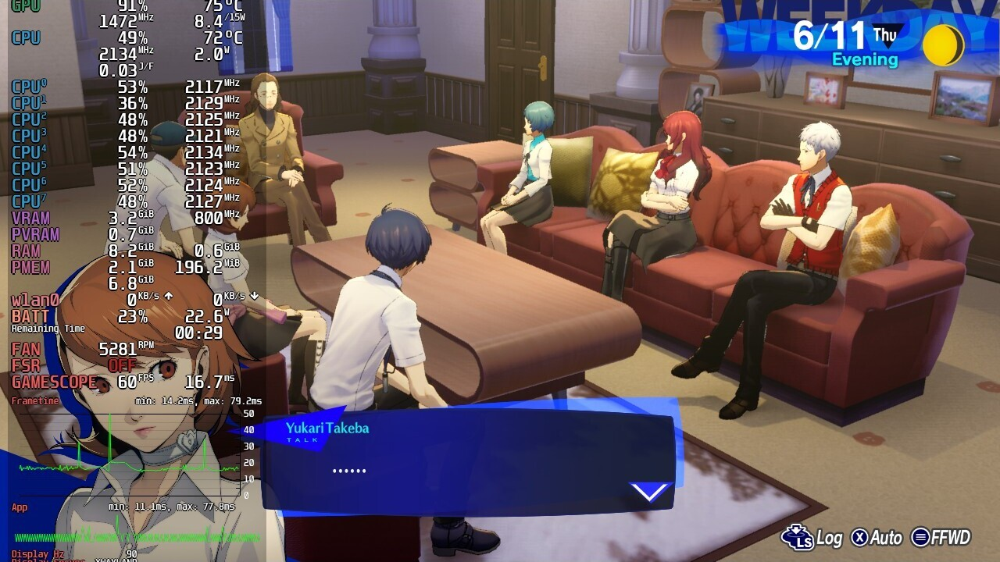
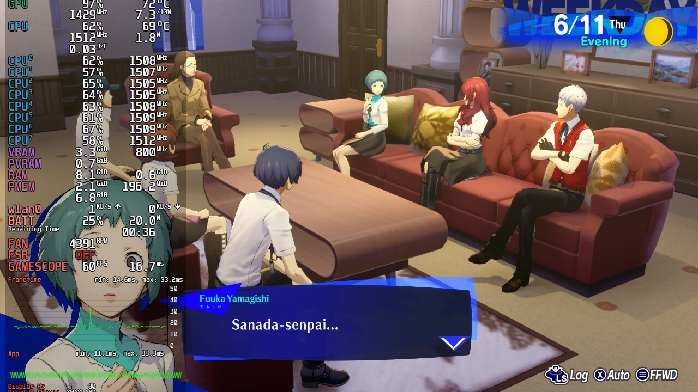
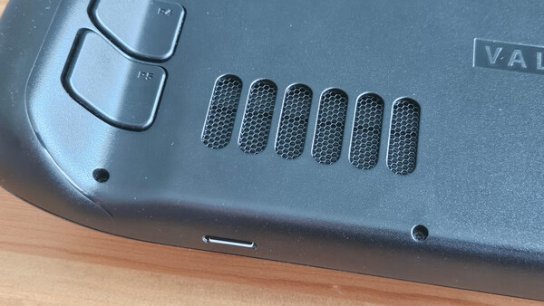

Four months with the Steam Deck. Experience report
In late 2023 I wrote a critique of Proton, claiming that in the long-term Proton is detrimental to gaming on Linux. My main argument was that Valve’s push for Proton has discouraged devs from preparing native Linux builds for their games; some fifteen years ago this used to be a rising trend, but it is now on the decline. At the same time, Proton is not a viable development target and there are many games that work with Proton initially, only to be later broken by updates. This was the gist of my original post.
Two years later, in late November 2025, I bought the Steam Deck — a handheld gaming PC1 released by Valve, that runs on Linux and relies entirely on Proton to run Windows games. After three months of using the Steam Deck, I am in love with it. I would like to share my experiences with the hardware after spending over 200 hours playing on the Deck, completing games such as Persona 3 Reload, Nier: Automata, Pentiment, Dispatch, and a few others.
Why?
Before diving into the details, I feel like I should explain how I went from criticizing Proton to buying a Steam Deck. Especially, that I also claimed to avoid using Steam because it is DRM by design and “purchasing” games on Steam does not really mean obtaining any kind of ownership.
The answer is quite simple: the fact that SteamOS is essentially Linux allows me to do anything with the device. Steam Deck is not in any way locked to Steam, which means I can install and play DRM-free games purchased from GOG. Aside from that, Steam Deck can do anything a normal Linux desktop can do: from booting into KDE5 Plasma desktop, to more advanced things like setting up SSH access or Samba shares. And if I am not happy with the SteamOS, I can even install a different Linux distribution, such as Bazzite. This freedom was the key factor in my decision.
There were other factors too. Firstly, while I have a desktop PC that can be used for gaming, I hardly ever use it actually play games: after a whole day at work I don’t feel like spending more time in front of it. This is where handheld gaming comes in. And while I already have a bunch of handheld consoles, being able to play titles from the PC allows me to play several games I could not really experience otherwise. Which brings me to the final component of my decision, and that is accepting the fact that there are several PC games I really want to play and I can only purchase them on Steam. Yes Persona games, I am looking at you.
Ergonomics
Initially, I had a lot of concerns about the ergonomics of the device. There is no denying that the Steam Deck is quite large. Here is how it compares to my keyboard and other handhelds:
{kind=link}

{kind=link}

I was concerned that prolonged gaming sessions will result in pains and cramps, as it has happened to me frequently when playing on a controller. To my surprise, that barely happened. Despite having multiple long gaming sessions, always with breaks every 45 minutes or so, I experienced little muscle fatigue. The Deck turned out to be more comfortable than the Switch, which I think might be due to profiled grips of the Deck, as opposed to flat joycons in the Switch. Even more interestingly, Deck turned out to cause less muscle strain for me than a regular controller (I usually play on Dual Shock 4) and I have no idea why that is, since grip profiling is similar and a controller is noticeably lighter.
I also had concerns about the button/analogue stick layout. On every controller that I have, index fingers lie naturally on LB/RB buttons and I have to reach downwards to press the LT/RT triggers. This downward move feels natural. With the Deck, it seems the other way around. In a neutral position my index fingers are more on the LT/RT triggers and pressing LB/RB buttons requires the fingers to gently move upwards. That upward move does not feel natural too me, and I was concerned it will lead to strain and fatigue. Another concern was the layout of analogue sticks and D-Pad/ABXY buttons. On the DualSense and DualShock 4 controllers, the sticks and the buttons/D-Pad are the same distance from the thumb basis. But with the Steam Deck, the analogue sticks are a bit farther, so I need to slightly reach out with my thumbs to use the sticks. Thankfully, none of these turned out to be a problem in practice. As already mentioned, I experienced barely any pain after longing gaming sessions, which is a huge improvement compared to gaming on a normal controller.
One minor complaint when it comes to design is lack of any kind of stand that would allow standing the Deck on a table, for example when watching cutscenes or videos. I tried leaning the Deck against books, but due to weight and smooth, round edges, it immediately slides down. In this regard, Nintendo Switch is way better.
Game compatibility
Since SteamOS is Linux, games that do not have a native Linux client — which is, like, almost every game — run using Proton compatibility layer2. Long story short: most games Just Work. With the games I tested, I did not run into any major issues. I had one game freeze twice, but I can’t say for sure that this was a compatibility layer issue — the problem might as well be with the game itself. The biggest surprise was that games with Denuvo DRM, such as Persona, run without any problems.
Minor issues were typically centred around controls. The games I found to be the most problematic are visual novels. These are typically designed to be played with a mouse, so controller experience is not perfect. It is possible to use the built-in touchpad, analogue stick, or touchscreen. Overall, visual novels are playable, but not the best possible experience. The good news is, it is possible to entirely reconfigure button mappings for each game separately and often there are community mappings already available for download.
This experience was also a nice reality-check for the upcoming (?) Steam Machine. Valve advertises its new controller as being compatible with every steam game, thanks to built-in touchpads that enable playing games designed with mouse and keyboard in mind. However, a game not designed for the controller will remain a game not designed for the controller, no matter what controller you use. No touchpad or screen keyboard will change that. While they may make a game playable, I don’t imagine this being comfortable.
Running non-Steam games
As mentioned earlier, it was crucial for me to be able to run games from my GOG library; being able to run free games from Epic wouldn’t be bad either. I think the easiest way of doing this on the Steam Deck is using Heroic Games Launcher (HGL), which is able to install games from GOG, Epic, and Amazon Prime libraries. HGL interface clearly wasn’t designed with controller and small screens in mind, but it is serviceable and does the job of installing and updating games. HGL can add games automatically to Steam launcher, allowing to launch titles directly, rather than through HGL. This needs to be explicitly enabled in the settings and I have found the feature to be somewhat unreliable, occasionally requiring adding external games to Steam manually. Also, during my tests, games added by HGL to Steam launcher were not removed upon uninstalling, leaving dead entries in the launcher. Hopefully, future updates address these issues.
I also experimented with running games not installed via any launcher, just copied from PC. Such games can be added in Desktop Mode via Steam Client’s “Add non-Steam Game” feature. I had to manually set the Proton version and all the artwork, but once that was done, games worked without any issues.
Modding the Steam Deck using Decky Loader
Now I get to the best part. Since Steam Deck is largely an open ecosystem, it has quickly spawned an active modding community. That community has created Decky Loader, a softmod that enables loading plugins that modify Steam’s default launcher in all sorts of ways. I have almost immediately applied a bunch of layout modifications, that declutter the launcher from things like recommendations, achievements, friends information, etc. I also installed some utility plugins, such as integration with How Long To Beat. Here is what final results look like.
{kind=link}

{kind=link}

{kind=link}

{kind=link}

Note the “Pause Games” plugin in the last screenshot above. This one solves what I perceive as a usability problem: it pauses a running game when the Steam menu is opened. Normally, if you open the game menu to, say, change controller configuration, the game runs in the background and only pauses upon opening the Library. I really appreciate how plugins allow to tweak behaviour of the Deck and address all sorts of usability requirements. But even without modding, available configuration options allow to access settings typically not available on consoles such as the Switch.
Overall, most of the plugins I tested were stable, though I found some combinations of layout modifications to cause minor glitches. Oh, and by the way, these layout modifications are essentially CSS injects, and you can write your own CSS modifications by connecting to Steam Client running on the Deck with a remote Chrome debugging session. Pretty neat!
{kind=link}

Screen
As far as technical specs of the Deck are concerned, the screen is my only complaint. It runs in a fairly low resolution of 800p (i.e. 1280x800) and it shows. I mean, the games don’t look horribly bad, but aliasing in 3D graphics and pixelation resulting from downscaling of 2D graphics can be visible to the naked eye. I can only speculate that this decision was made to extend the battery life, since an FHD screen has twice as many pixels, which in turn requires more GPU power to render.
Furthermore, I don’t think that an aspect ratio of 16:10 is a good idea. Games with 2D graphics do not make any use of extra screen space. Even some 3D titles don’t seem to be able to handle it and also run in 16:9. So for the most part, the games just run in 16:9 aspect ratio with black stripes at the top and bottom. Thankfully, on an OLED screen these black stripes remain entirely invisible, and I only realized they were there after looking at the screenshots taken in-game.
While searching for information about the Deck’s screen, I learned about something that is known as PWM dimming or PWM flicker. As it turns out, brightness adjustment in modern OLED screens is performed by quickly turning the screen off and on, or: black frame insertion. The lower the brightness, the more black frames get inserted. From what I am reading online, for this to work without causing issues to the users, the flickering should be done at very high refresh rates of up to 3000Hz (!), but many modern screens go for much lower frequencies, sometimes even as low as 240Hz. Apparently, OLED screen used in the Steam Deck is on the lower end of things and causes problems for many users. Luckily for me, I do not seem to be affected, but browsing online forums shows, that many people are.
Battery life
Battery life was one of my concerns, as it is a frequently raised criticism of the Deck. Thankfully, it isn’t as bad as I feared. I have not made exact measurements, but with 2D titles the battery lasts around 5 hours or so, which for me is quite good. However, more demanding 3D titles cut that time in half. Importantly, Deck’s settings allow adjusting the TDP, i.e. power draw of the APU. This can result in extra 30-45 minutes of play time, without going below 60FPS. I played Nier: Automata and Persona 3 Reload with TDP limited from the default of 15W to 11W, and in both cases it worked well. Without limiting the TDP, both games were quite intensive on the APU, speeding the fan up to 5500 RPM and turning the Deck into a small hairdryer.
{kind=link}

{kind=link}

Battery settings allow setting the charge limit. I have initially experimented with setting the limit to 80%, since this is supposedly the optimal value for extending battery longevity. But then I concluded that repeatedly giving up on the 20% of battery charge to prevent battery capacity from dropping by few percent in perspective of several years makes little sense — this just does not add up. Interestingly, the battery already does not charge to 100%, but to 99%. Sleep mode drains approximately 10% per day.
Build quality
My initial impressions of the build quality were very good. With no loose elements, the Deck certainly made a better first impression than the Switch. Unfortunately, after a couple of weeks I had to revisit my opinion. I noticed that the shell around the microSD slot and the rear air intake mesh bends gently under pressure, producing an audible cracking noise. I acknowledge this could potentially be a result of me holding the Deck in one hand and using thumb as support near the microSD slot. That bending is barely noticeable, but the cracking sound is slightly irritating, especially that it can be heard when simply touching near the card slot. Not a big deal, but I would expect better.
{kind=link}

Other features
Desktop mode. By default, Deck runs in gaming mode with the Steam Client, running in Big-picture mode, acting as the UI. However, it is also possible to boot the Deck into desktop mode, which runs KDE5 Plasma. At this point it becomes a Linux desktop that can run all the standard applications and services. On my Deck, I have set up Samba client, allowing me to access my local network resources and transfer files between the Deck and PC. I have also used the desktop mode to set up extra applications available in gaming mode, such as a media player and the already mentioned Heroic Games Launcher.
That being said, working in desktop mode using an on-screen keyboard and a trackpad or touchscreen instead of mouse is very uncomfortable. It can work in emergency situations, when one just needs to set up a new component and then return to gaming mode. However, I do not imagine working in desktop mode for extended periods of time using only Deck’s built-in controls. For that, one needs a docking station that allows to connect external display, keyboard, and mouse. Unfortunately, official Valve docking station has been out of stock for the past couple of months and I feel reluctant to try a replacement.
Playing media. I want to be able to use the Deck for watching videos when away from home. Thanks to the microSD slot, it is possible to store media files without cluttering the high-speed internal drive. There remains the issue of selecting a media player. My first attempt was VLC, which is what I use on the desktop and on my phone. I want to be able to launch videos without having to boot into desktop mode, so I added VLC as an external application to the Steam launcher. Unfortunately, VLC turns out to be completely unsuitable for gamepad/touchscreen controls. I thus quickly gave up on VLC and decided to give Kodi a try. I already had some moderate success using it on my Raspberry Pi to play movies on a CRT. Indeed, Kodi does a better job running from gaming mode. It isn’t perfect, but it is usable.
Multiple account support. I am occasionally sharing the Deck with my wife,
so I wanted to be able to set up multiple user accounts such that each person
has their own game saves. Unfortunately, the experience is not exactly what I
hoped for. I mentioned already that the Deck can be used as a standard Linux
PC. And that is true as long as you don’t try to create multiple Linux user
accounts. Deck has a default system user called deck and, from what I read
online, it tries hard to stop you from creating more users3. Instead, one is
expected to add more user accounts in the Steam client and switch between those
accounts. These different Steam users still share the same Linux user account
though. So, does each user have their own saves? Testing with a couple of
games shows that indeed each user has their own save files, at least when it
comes to games that support saving via Steam API. For external games that, for
example, store saves in their installation directory, save files are obviously
shared. Overall, the experience of sharing the Deck between several users is
not as smooth as it is for Nintendo Switch4.
Online requirement. One big concern I had when purchasing the Deck was the online nature of Steam. Thankfully, since Deck is after all a mobile device, that requirement is quite relaxed, and it is possible to play games while being offline for extended periods of time. Even Denuvo-protected games work in offline mode, though these can require periodic connections to Internet to regenerate the offline licence. My only complaint about offline mode is that tracking game time does not seem to work correctly.
Emulation. I am yet to try emulation on the Deck. For now, I have set up EmuDeck, but other than having it installed, I have not used it.
Summary
My experience with the Steam Deck over the past four months has been very positive. I really like its ergonomics and configurability, but most importantly I appreciate how it allows me to play PC games away from my desktop PC. Crucially, being able to suspend the device at any time makes it possible to conduct short, 20-30 minute gaming sessions in the evening. These gaming sessions would not have otherwise happened on a desktop. I was ignoring the Steam Deck for a couple of years after its release, but now that I bought it, I am very pleased with how it actually allows me to spend more time on gaming.
In fact, the first handheld gaming PC.↩︎
If a game has a Linux version, it is still possible that under SteamOS it will run the Windows version via Proton. This can happen if Valve decides during testing that using Proton works better than the native version.↩︎
I am basing this on online community posts and have not tried to replicate it on my Deck.↩︎
On top of that, there is the usual Steam DRM that prevents you from playing the same game on two machines, but that is not unique to the Deck.↩︎